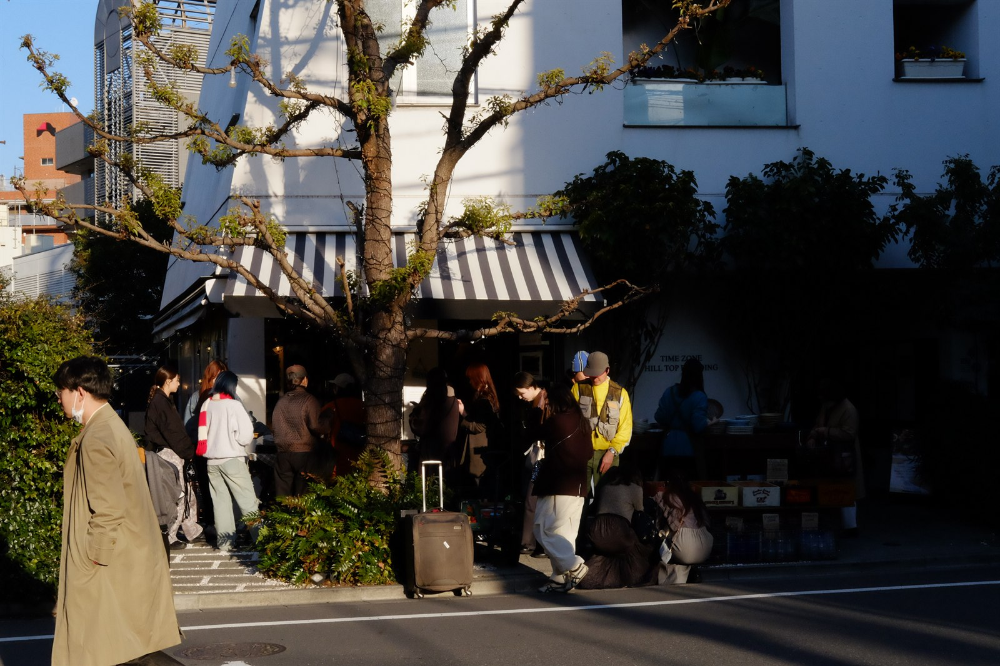
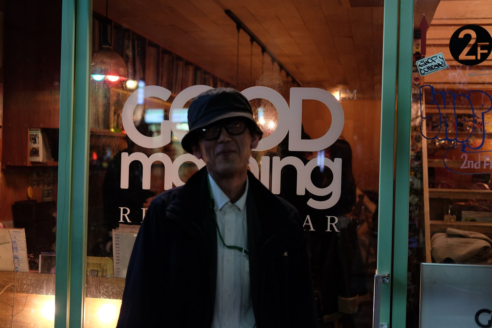
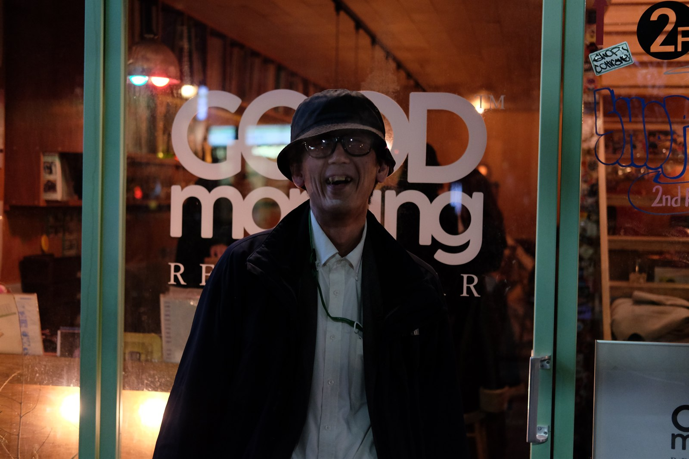
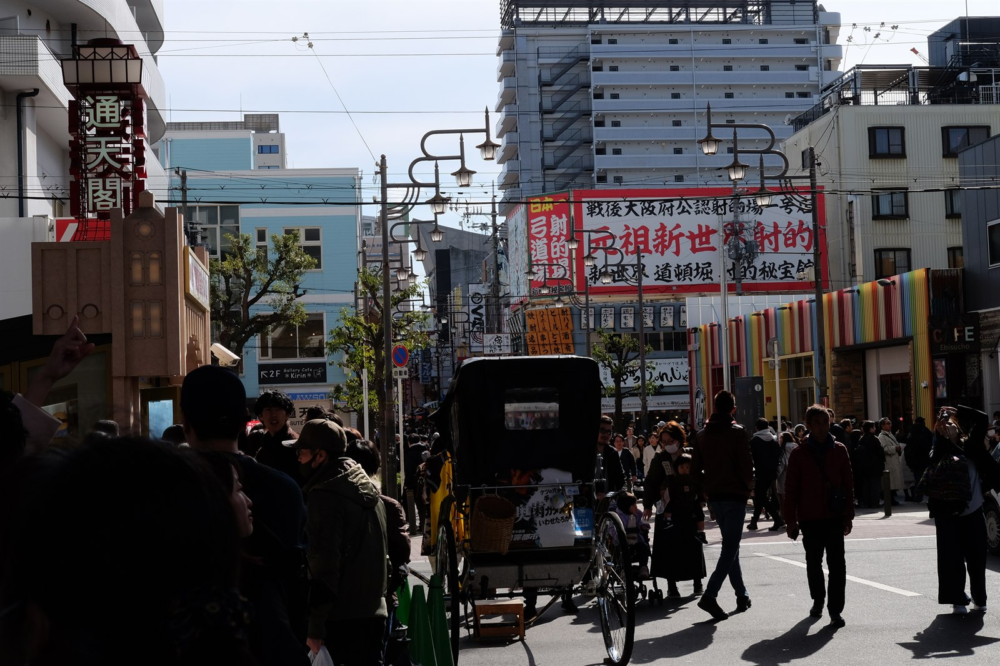
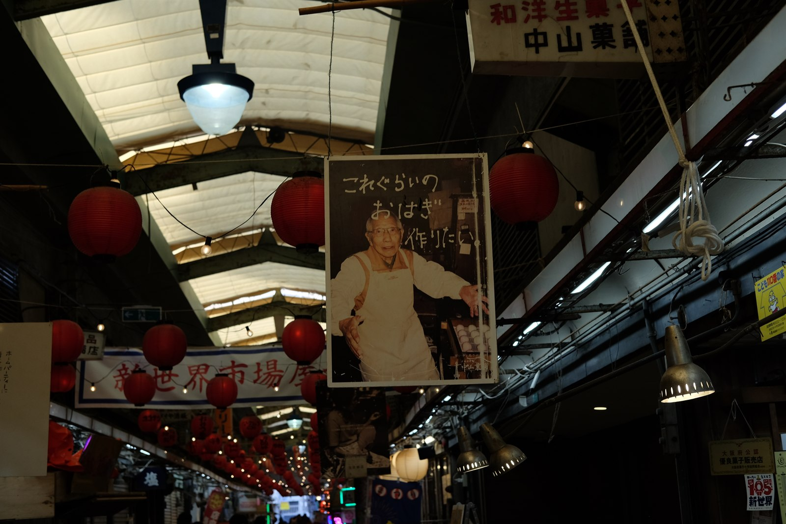
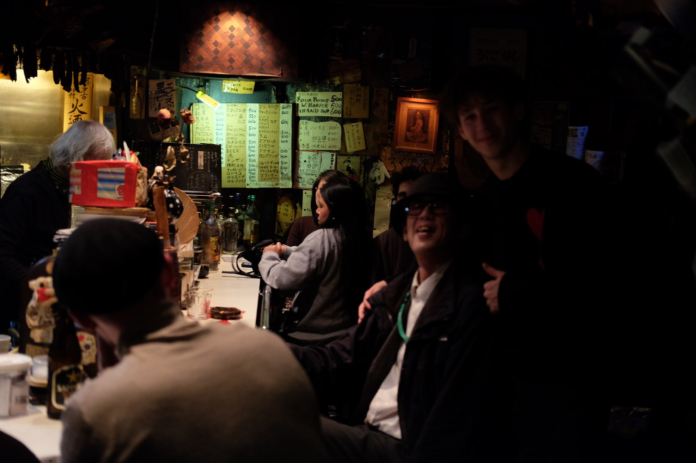

Ishaan Sendhil ____ ___ _ _ __ __ _ _ ___ ____ _ _ ____ _ _ ____ __ (_ _)/ __)( )_( ) /__\ /__\ ( \( ) / __)( ___)( \( )( _ \( )_( )(_ _)( ) _)(_ \__ \ ) _ ( /(__)\ /(__)\ ) ( \__ \ )__) ) ( )(_) )) _ ( _)(_ )(__ (____)(___/(_) (_)(__)(__)(__)(__)(_)\_) (___/(____)(_)\_)(____/(_) (_)(____)(____)
Toronto





